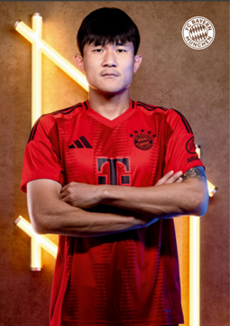
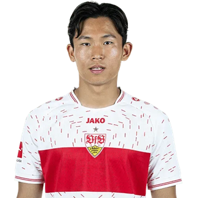
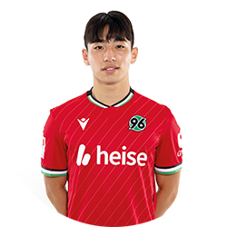
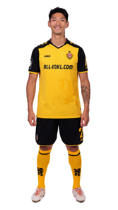

독일의 프로 축구 리그인 분데스리가! 유럽의 5대 리그1) 중 분데스리가가 한국인이 가장 많이 진출한 리그라는 사실을 여러분은 알고 계신가요?
한국인의 유럽 진출을 포문을 연 차범근 선수부터 프리미어 리그에서 아시아 선수 최초로 득점왕을 수상하며 명실상부 탑클래스 반열에 오른 손흥민 선수, 22-23 시즌 세리에 A 최우수 수비수를 수상하며 유럽에서 손에 꼽히는 퍼포먼스를 보여주며 분데스리가 간판 클럽 바이에른 뮌헨으로 이적하여 활약하는 김민재 선수 까지 많은 선수들이 분데스리가에서 족적을 남겼는데요.
이번 글에서는 현재 분데스리가에서 활약하는 한국인 선수들을 여러분에게 소개해드리겠습니다!
1) 잉글랜드 프리미어 리그. 스페인 라리가, 독일 분데스리가, 이탈리아 세리에 A, 프랑스 리그 1
맨 처음 소개해드릴 선수는 바이에른 뮌헨에서 활약하고 있는 수비수 김민재 선수입니다.
김민재 선수는 22-23 시즌 이탈리아 SSC 나폴리에서 유럽 내에서 손에 꼽히는 퍼포먼스를 보여주면서 많은 클럽들의 관심을 받았고 그중 바이에른 뮌헨이 김민재 선수의 바이아웃2) 을 지불하며 한화 약 600억을 지불하고 영입하였는데요.
프리시즌 시작 전 기초군사훈련을 받는 관계로 약 3주 동안 몸 관리를 하기 힘든 상황이었기 때문에 프리시즌 그리고 시즌 초반까지 퍼포먼스를 끌어올릴 수 있을지 많은 팬들이 걱정을 하였습니다. 하지만 걱정이 무색하게 김민재 선수는 수비수들의 줄 부상 속 수비진의 한자리를 굳건히 지키며 혹사에 가까울 정도로 많은 경기를 소화하며 뛰어난 퍼포먼스를 보여주었습니다.
하지만 시즌 중 아시안 컵 출전을 위한 국가대표 차출, 그리고 아시안 컵 이전까지 많은 경기를 소화함에 따라 체력적으로 부진한 모습을 보여주었고 이로 인하여 아쉬운 판단들을 보여주면서 김민재 선수가 지니고 있던 단점이 부각되며 유럽에서 가장 큰 축구 대회인 챔피언스리그 그중에서도 결승 문턱인 4강전에서 아쉬운 경기력을 보이며 많은 언론들의 비판을 받고 이에 더해 바이에른 뮌헨이 김민재 선수를 매각하려고 한다는 여러 이적설에도 휘말렸는데요.
하지만 김민재 선수가 잔류하여 바이에른 뮌헨에서의 경쟁에서 살아남아 본인을 증명하겠다는 의지를 보여주며 24-25 시즌 경쟁과 활약을 예고하며 이적설을 잠재웠는데요. 확실한 고점의 퍼포먼스를 보여준 이력이 있는 선수인 만큼 많은 축구 팬들의 기대와 응원을 받는 대한민국의 간판 수비수 김민재 선수입니다!
2) 프로축구에서의 바이아웃은 선수와 구단이 계약할 때 맺는 조항으로, 일정 금액 이상의 이적료를 제시하는 타 구단은 소속 구단과의 협의 없이 바로 선수와 협상할 수 있는 조항.
두 번째로 소개해드릴 선수는 1. FSV 마인츠 05 구단에서 활약하고 있는 국가대표 미드필더 이재성 선수입니다!
이재성 선수는 K리그 전북 현대 모터스 구단에서 뛰어난 활약을 선보이며 많은 우승 트로피를 들어 올리고 K리그 MVP를 수상하면서 국내에서 뛰어난 활약을 바탕으로 독일로 무대를 옮겼는데요. 이재성 선수는 독일의 2부 리그인 2. 분데스리가의 홀슈타인 킬로 이적을 하여 유럽 무대에서의 활약을 시작하였습니다.
홀슈타인 킬은 이재성 선수를 영입하는데 약 12억이라는 금액을 지불하였는데요. 이전의 구단 최고 이적료가 약 3억인 점을 고려해 보면 구단이 이재성 선수에게 걸었던 기대가 매우 컸다고 볼 수 있습니다. 여담이지만 아직까지 홀슈타인 킬 구단의 최고 이적료는 이재성 선수를 영입할 때 지불했던 금액입니다.
또한 이재성 선수는 에이스를 상징하는 등번호인 7번을 부여받으면서 구단 그리고 팬들의 많은 기대를 받았습니다. 이재성 선수는 구단 그리고 팬들의 기대에 부응하는 활약을 계속 선보였는데요 킬에서 활약한 3시즌 내내 꾸준한 출전을 물론 뛰어난 공격포인트 생산력을 보여주면서 명실상부 킬의 에이스이자 리그 수위급 선수 중 한 명으로 군림하였습니다.
이렇게 이재성 선수의 뛰어난 활약은 유럽의 여러 구단들의 관심을 이끌었습니다. 그중 분데스리가 소속의 마인츠 구단에서 적극적인 구애를 보였고 이재성 선수는 결국 마인츠행을 선택하였습니다. 마인츠에서도 고려대학교 시절, 홀슈타인 킬 시절 달았던 등번호 7번을 부여받으면서 활약을 예고했습니다.
꾸준함과 실력에 있어서는 이미 입증된 선수인 만큼 2. 분데스리가 보다 상위 리그인 분데스리가에 와서도 이재성 선수의 실력은 여전하였는데요 마인츠에서의 첫 시즌인 21-22 시즌부터 직전 시즌인 23-24 시즌까지 3년 동안 마인츠에서 또한 이재성 선수는 붙박이 주전으로 나오면서 팀에 활기를 불어넣는 활약을 선보였습니다.
독일의 유명 스포츠 잡지 키커에서는 매 시즌 전반기와 후반기에 리그에서 활약했던 선수들을 평가하여 등급을 매기는 Kicker 랑리스테를 선보이는데요. 독일 최고의 공신력을 가진 축구선수 평가입니다.
이재성 선수는 Kicker 랑리스테에서 21-22 시즌 전반기에는 내셔널 클래스3) 를 받았습니다. 이는 분데스리가 공격형 미드필더 중 10위에 해당하는 기록이며 21-22 시즌 분데스리가 아시아 선수로는 유일한 등급이었습니다. 22-23 시즌 후반기 또한 내셔널 클래스를 수상하며 분데스리가 공격형 미드필더 순위 최종 7위를 차지하였습니다. 직전 시즌인 23-24 시즌에는 내셔널 클래스, 공격형 미드필더 순위 12위를 기록하면서 꾸준하게 좋은 퍼포먼스를 선보이고 있습니다.
더군다나 이재성 선수는 23-24 시즌 직전 팀과 재계약을 체결하면서 독일 무대에서의 지속적인 활약을 예고하였는데요! 비록 화려한 선수는 아니지만 묵묵하게 궂은일을 도맡아 하면서 헌신적인 팀플레이를 보여주면서 팀의 승리에 지대한 공을 세우는 이재성 선수! 손흥민 선수와 동갑인 만큼 유럽에서의 활약이 그리 많이 남은 나이라고는 볼 수 없는데요. 이재성 선수가 끝까지 독일에서의 좋은 활약을 보일 수 있도록 많은 관심과 응원을 가져주시면 좋을 거 같습니다!
3) 월드클래스와 인터내셔널 클래스 다음에 해당되는 등급
세 번째로 소개해드릴 선수는 Vfb 슈투트가르트 소속의 정우영 선수입니다!
정우영 선수는 김민재 선수 이전에 독일의 명문 클럽인 바이에른 뮌헨에 소속되었던 첫 번째 한국인 선수인데요! K리그 클럽 중 하나인 인천 유나이티드 구단의 유스팀에서 활약하고 있던 정우영 선수는 바이에른 뮌헨, FC 아우크스부르크, 1.FC 쾰른 등 복수의 유럽 구단에서 입단 테스트를 받았습니다. 그중 바이에른 뮌헨이 정우영 선수를 긍정적으로 평가하여 계약까지 성사가 되며 명문 클럽 바이에른 뮌헨에 입단한 첫 번째 한국인 선수이자 아시아 선수가 되었습니다.
정우영 선수는 바이에른 뮌헨의 유스팀, 2군 팀에서 꾸준히 출전을 하면서 성장을 하였습니다. 성장의 결과물로 정우영 선수는 바이에른 뮌헨 구단에서 리그 경기, 챔피언스리그 경기에서 데뷔를 하며 유럽 무대에서의 활약을 시작했습니다. 이후 정기적인 경기 출전을 위해 정우영 선수는 이적을 추진하였고 분데스리가의 SC 프라이부르크 구단으로 이적합니다. 프라이부르크는 약 60억 원에 정우영 선수를 영입하였는데 이는 구단 이적료 3위에 해당하는 기대로 유망주에 불과했었던 정우영 선수지만 구단이 큰 기대를 하고 영입했다고 볼 수 있습니다.
하지만 프라이부르크 구단에서 정우영 선수의 선수 생활은 순탄치 않았습니다. 첫 시즌인 19-20 시즌에는 자리를 잡지 못하여 경기 출전 횟수가 적었으며 이로 인해 경기력 유지를 위해서 이전 소속팀이었던 바이에른 뮌헨의 리저브 팀인 바이에른 뮌헨 II 구단으로 임대 이적하여 경기를 출전하였습니다.
이후 시즌인 20-21 시즌에는 확실한 주전은 아니었지만 감독의 신임을 받으면서 주로 교체를 통해 꾸준하게 경기 출전 기회를 받으면서 어린 나이 대비 꽤 준수한 출전 시간을 부여받으면서 만족스러운 시즌을 보냈습니다. 특히 21-22 시즌에는 팀의 주전 공격수로 활약을 하며 팀의 챔피언스리그 진출에 보탬이 되는 등 인상적인 시즌을 보냈습니다.
하지만 22-23 시즌에는 출전한 34경기 중 25경기를 교체 출전하며 완전히 경쟁에서 밀린 모습을 보였습니다. 더군다나 감독의 구상에서도 제외된 상황이기 때문에 꾸준한 출전을 위해서는 새로운 팀을 찾아야 하는 상황에 이르렀습니다.
결국 정우영 선수는 이적을 택하였고 Vfb 슈투트가르트 구단에서 약 43억 원을 지불하고 정우영 선수를 영입했습니다. 프라이부르크에서 굴곡 있는 생활을 보냈던 정우영 선수는 새로운 팀, 새로운 환경에서 새롭게 출발하며 23-24 시즌을 시작하였습니다.
개막 초반에는 흐름이 좋았습니다. 계속해서 주전 공격수로 출전을 하면서 팀에 좋은 영향력을 불어 넣었습니다. 하지만 항저우 아시안게임 출전을 위해 국가대표로 차출되며 약 한 달간 공백이 생겨버렸고 복귀해서는 경쟁에서 밀려 출전 시간이 대폭 감소하였습니다. 더군다나 후반기에는 아시안 컵 대회 참가를 위해 국가대표로 차출되며 또 한 달간 공백이 발생하였습니다.
이후 팀에 복귀해서도 경쟁에서 밀린 상태였기에 지속적으로 교체로 출전을 하며 기회를 부여받았습니다. 비록 많은 시간을 소화하지는 못했지만 리그 막바지에는 교체로 들어가 골과 어시스트를 기록하는 모습을 보이는 등 유종의 미를 거둔 시즌이 되었습니다.
새로운 팀에서의 첫 시즌은 정우영 선수에게 쉽지 않은 시즌이었습니다. 두 번의 국가대표 차출로 인해 팀을 비우는 시간이 길어졌으며 그 와중에 팀은 정우영 선수 없이 리그에서 연승 행진을 달리고 좋은 모습을 보이며 바이에른 뮌헨을 제치고 리그 2위를 차지하는 등 엄청난 행보를 보였기 때문에 이러한 좋은 흐름에서 굳이 변화를 가져가는 위험을 감수할 필요가 없었던 감독과 팀은 정우영 선수를 교체로 지속적으로 출전을 시키는 플랜을 그대로 유지하였습니다.
비록 경쟁에서 밀린 시즌이었지만 한편으로는 아시안게임에서 금메달을 획득함으로써 선수 생활을 가장 큰 걸림돌인 병역 문제를 해결하여 해외에서 활약할 수 있는 기간을 조금 더 길게 가져가게 될 수 있게 되었고 워낙 성실한 플레이를 경기장에서 매번 보여주는 선수이기 때문에 경기에 들어가면 팀에 좋은 활력을 불어 넣을 수 있다는 점, 직전 시즌인 23-24 시즌의 마무리를 골과 어시스트로 기록하며 좋게 마무리했던 점 등은 정우영 선수에 대한 기대감을 가질 수 있게 하는 요소들인데요! 팀이 챔피언스 리그에 출전하는 만큼 더 높은 무대에서 활약을 보여줄 수 있는 정우영 선수에게도 많은 관심 가져주시면 좋겠습니다!
이렇게 이번 글에서는 한국인이 가장 많이 진출한 5대 리그 중 하나인 분데스리가에서 현재 활약하고 있는 선수들을 소개하는 시간을 가져보았는데요 비록 1부 리그는 아니지만 2부 리그인 2. 분데스리가에는 또 다른 바이에른 뮌헨 유스 소속이자 현재 하노버 96 구단으로 임대되어 이번 시즌 활약을 예고한 이현주 선수가 활약하고 있으며 3부 리그인 3. 리가의 SG 디나모 드레스덴 구단에는 아시안 게임 금메달의 주역 중 한 명이 자 국가대표로 데뷔까지 한 박규현 선수가 활약하고 있습니다.4)
아무래도 2, 3부 리그는 중계를 쉽게 볼 수 있는 환경이 아니기 때문에 비교적 사람들의 관심도가 떨어질 수밖에 없습니다. 하지만 2, 3부 리그에서도 본인의 꿈을 위해 계속 노력하는 선수들이 존재하고 이 선수들이 1부 리그까지 진출하여 대한민국 축구가 세계에서의 경쟁력을 높이는 데 도움이 될 수 있도록 여러분의 많은 관심 가져주시면 좋을 거 같습니다!
|   |
독일뿐 아니라 먼 타지에서 활약하고 있는 선수들 화이팅!
4) 글의 모든 사진의 출처는 구단 공식 홈페이지입니다.